Outside Lands is the largest independent music and arts festival in the US, held over 3 days every year in Golden Gate Park in San Francisco.
Since 2021, I have worked on the festival's live stream as a scriptwriter, and occasionally also as an associate producer. I work both remotely in New York in the lead-up to the festival, and on-site in San Francisco during the festival.
Using my music background and knowledge, I help to curate artists to feature on the live stream. I also collaborate with the creative director and executive producer on live show packages, including interviews with artists on set and with talent and audience members in the field.
I write all content for the live stream, including daily scripts for the hosts; interview questions for artists, talent, and special guests; on-screen supers; and promotional content. I also ideate and write trivia, games, competitions, and other interactive content to engage vendors, partners, and viewers.
Throughout the festival I also write and publish live stream chat comments in the voice of the festival and its two official mascots.
In 2021 the official live stream on Twitch (sponsored by Levi's and M&M's) attracted nearly 6 million views.
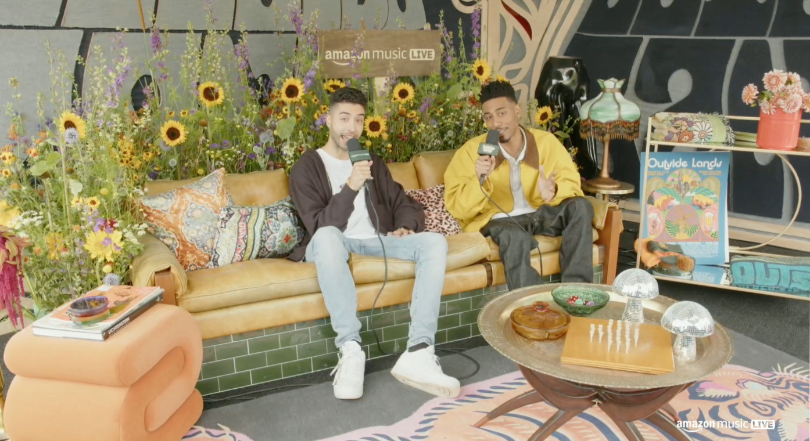
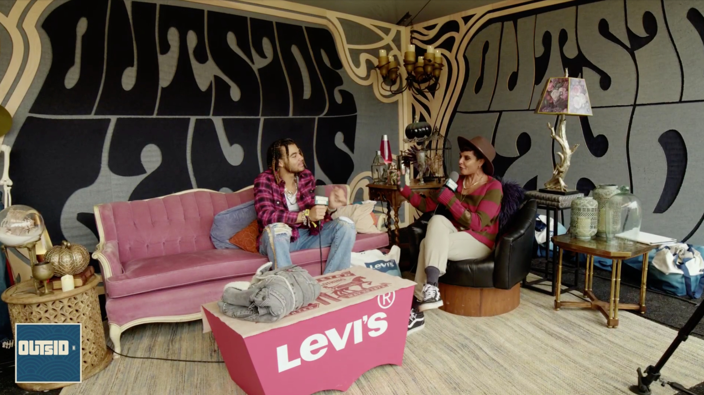
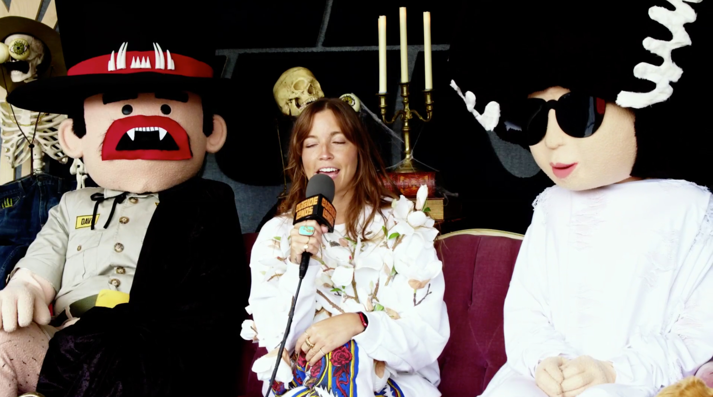
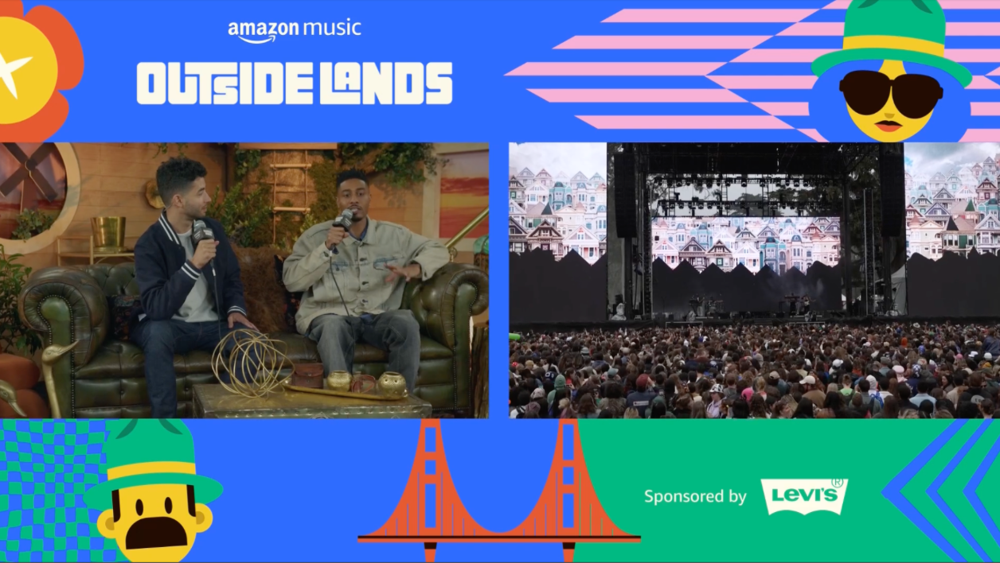
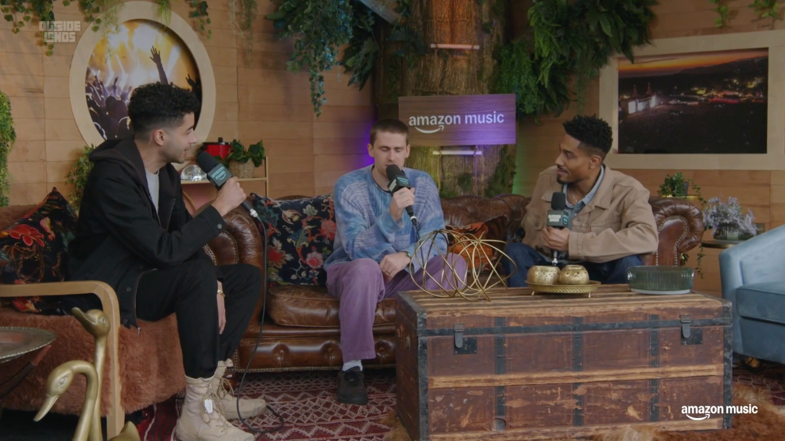
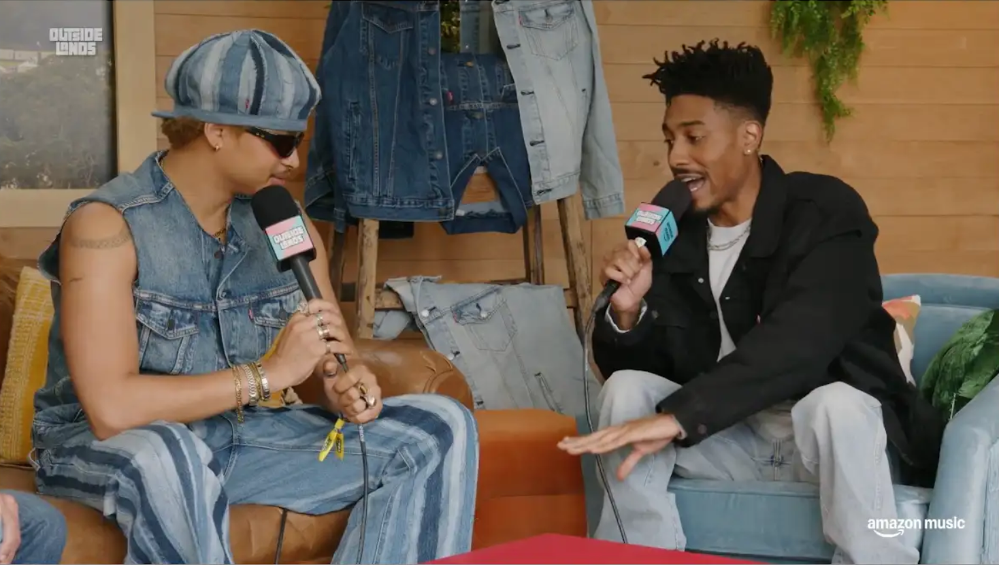
Before I began working on the live stream, I worked as a Copywriter on the festival with their partner agency Superfly.
My duties in this role included writing copy for social media channels (Instagram, Facebook and Twitter, including the super fun line-up clues below), email marketing, and the website.
I worked with brand managers, social media managers, project managers and designers, drawing on my deep knowledge of music and marketing to write entertaining and engaging copy for interactive social media posts.
I assisted with populating the editorial calendar and worked with tone of voice guidelines to ensure brand consistency across all marketing collateral.
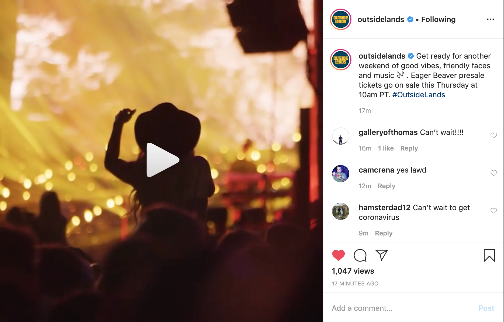
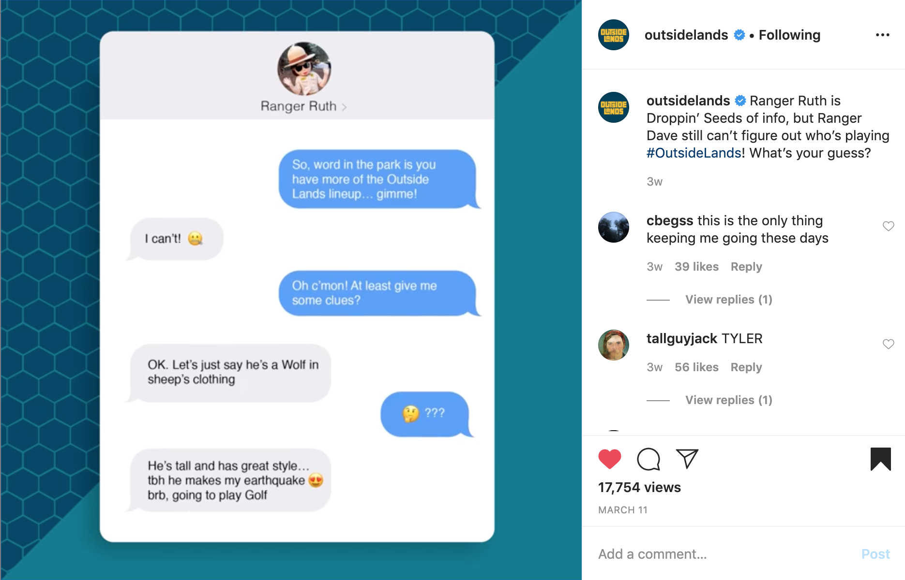
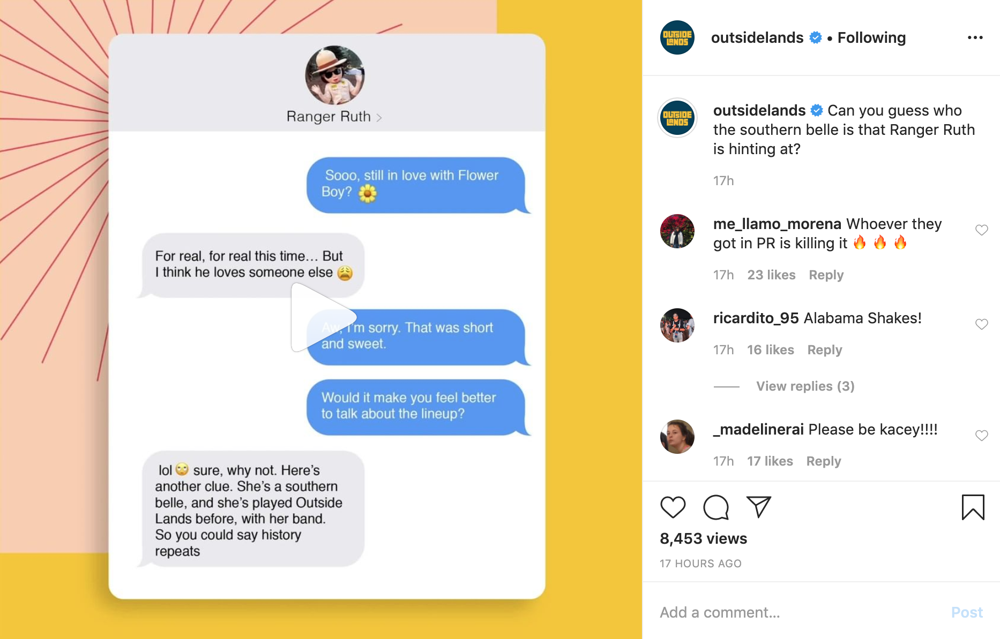
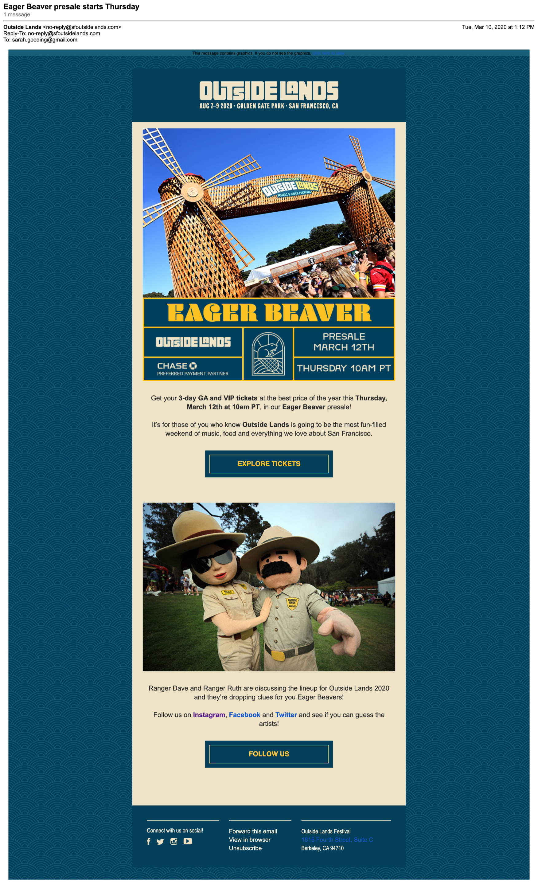
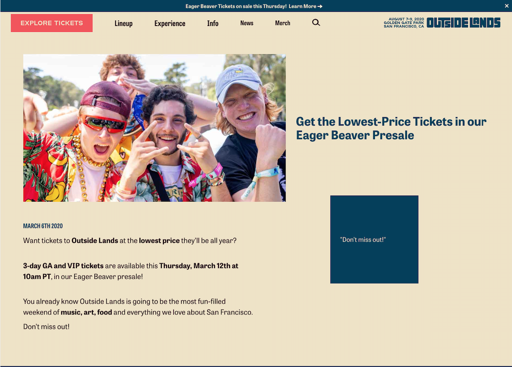